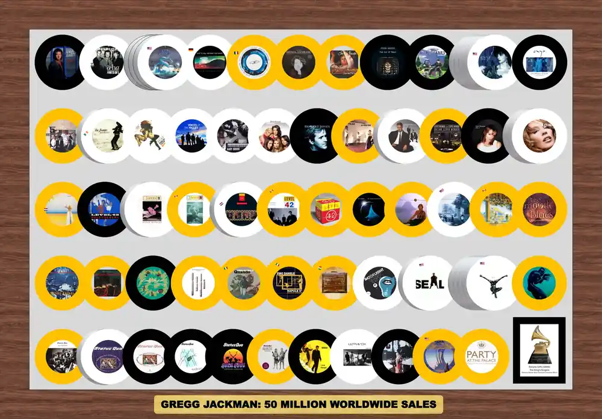

E-ink displayReady

SELECTED—
——
SELECTED ALBUM
◉
Your collection
Choose a disc below
Browse discs
NOW PLAYING
♫
Volume
0:00—
—
Tracks
—Connect to load track information.
Your collection is ready. Connect to control the physical display.
First connection uses the browser’s Bluetooth device picker. Android Chrome or a compatible desktop browser, over HTTPS, is required.

Choose a disc below
Connect to load track information.